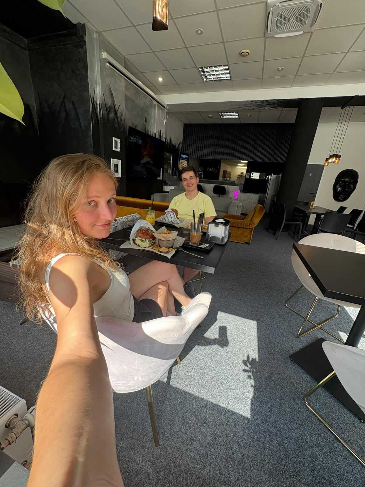
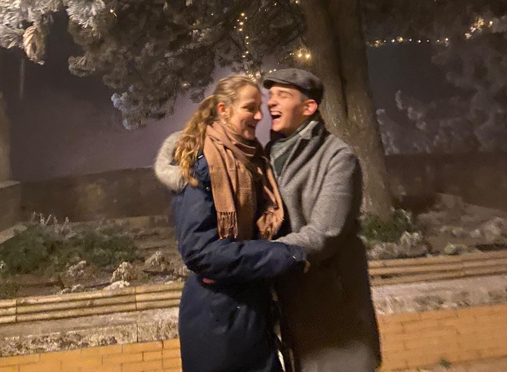
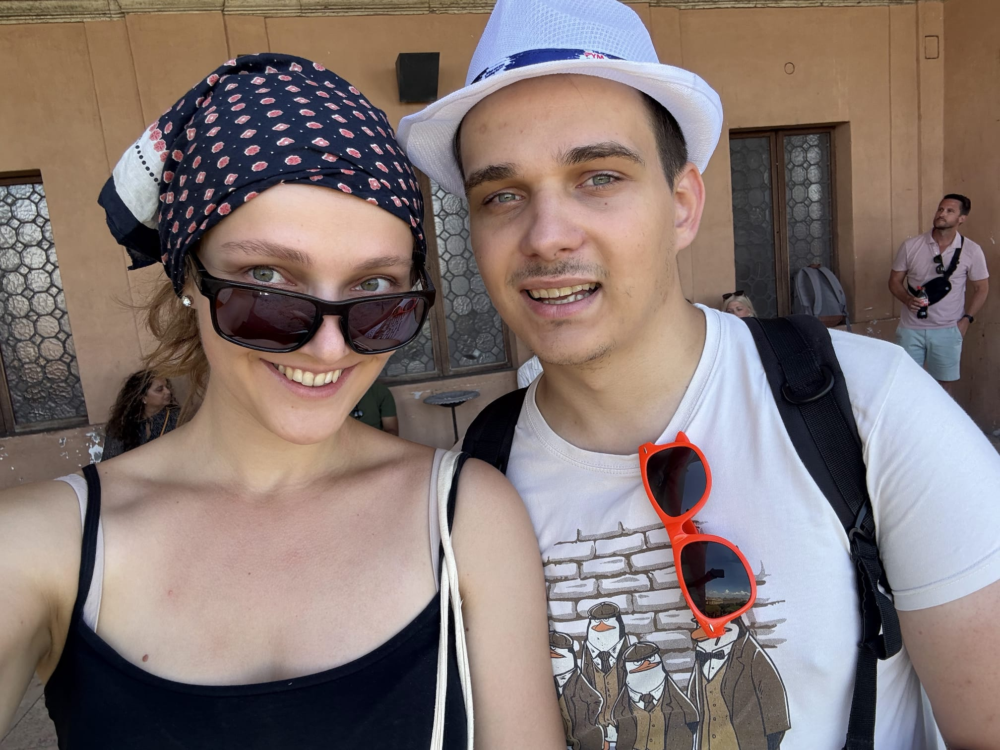
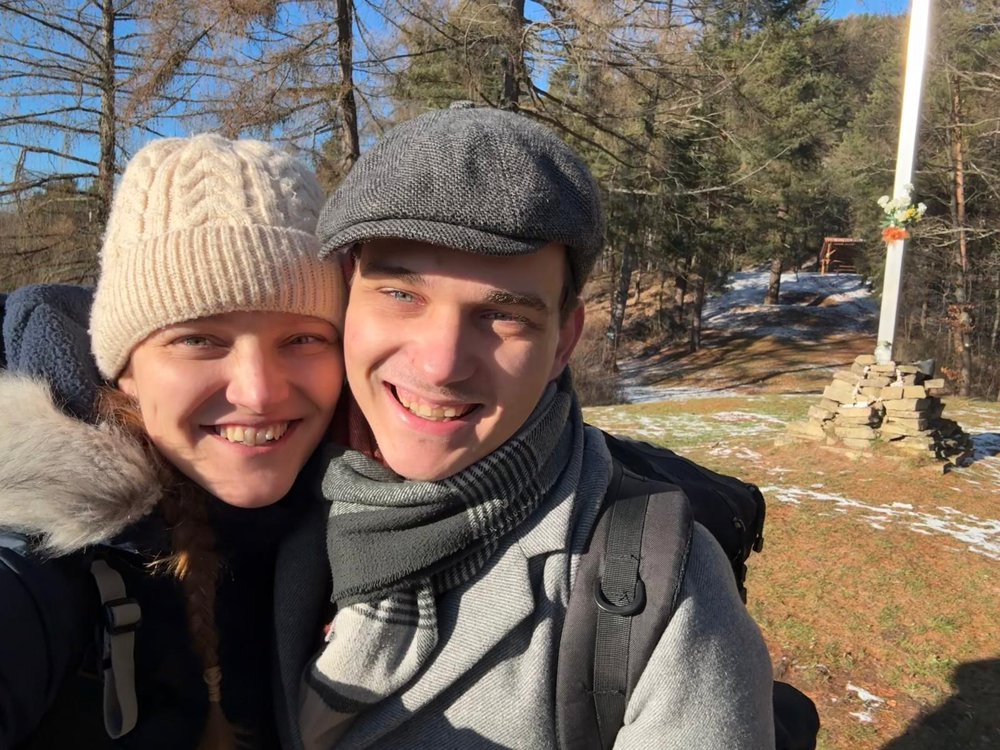

Prvé dlhé rozhovory
Z workshopu sa stal rozhovor, z rozhovoru rande — a z rande niečo, čo už nechceli pustiť.
Ako sa to celé začalo
Trochu AI workshop, trochu geekovské fakty, trochu odvahy — a zvyšok už bol náš príbeh.
Prišiel do Esztergomu v podstate len preto, aby sa pochválil týmto tričkom — a nejako si myslel, že začať rozhovorom po AI workshope a geekovskými faktami je skvelá baliaca stratégia. Odvážne.
Bola však prekvapená — nielen preto, že bol vtipný, ale aj preto, že bol naozaj milý a zvláštne zvedavý na pohľady iných ľudí. Ešte prekvapivejšie? Odpovedala mu ešte väčšou dávkou geekovských faktov a otcovských vtipov. To naozaj nečakal.
Po tom, čo sa neskoro zaregistroval do Esztergomu, sa nenápadne premenil na turistu po prvý raz v Budapešti — kde sa mu nejako podarilo viesť milý rozhovor a mať poriadne rande pri guláši.
Prekonal aj svoj strach z výšok. Nielen ten typ „je rovnako vysoká ako ja“ — ale aj ten veľmi reálny pocit pri lezení na Most slobody, keď si hovoril „prečo vlastne leziem na Most slobody“, vďaka jej návrhu. Stálo to za to.
Odvtedy podporuje jej sny — zatiaľ čo občas pridá svoje „okej, ale zostaňme realistickí“ poznámky. Funguje to. Ona je viac pri zemi, on je dobrodružnejší a spolu si akoby budujú niečo ako snívaj vo veľkom, ale rob to reálne.
Bol tam ten jeden moment pri ružovej záhrade Gül Babu — keď prepla do výsluchového módu napriek ruži, ktorú jej dal, a spýtala sa, ako snívať vo veľkom a zároveň zostať realistická vo vzťahoch. Tentoraz sa ukotvila ona. On sníval. Zostalo to.

„Ona ho učí snívať múdro. On ju učí snívať odvážne.”
A niekde medzi tým vznikol domov.

Z workshopu sa stal rozhovor, z rozhovoru rande — a z rande niečo, čo už nechceli pustiť.

Cestovanie, objavovanie, smiech, otázky o živote a vždy ešte aspoň jeden ďalší plán navyše.

A teraz? Pravdepodobne spievajú v kuchyni. Alebo hocikde, vlastne.
Niektoré príbehy začnú veľkým gestom. Náš sa začal tričkom, otázkou po workshope a dvoma ľuďmi, ktorým bolo spolu akosi prirodzene dobre.